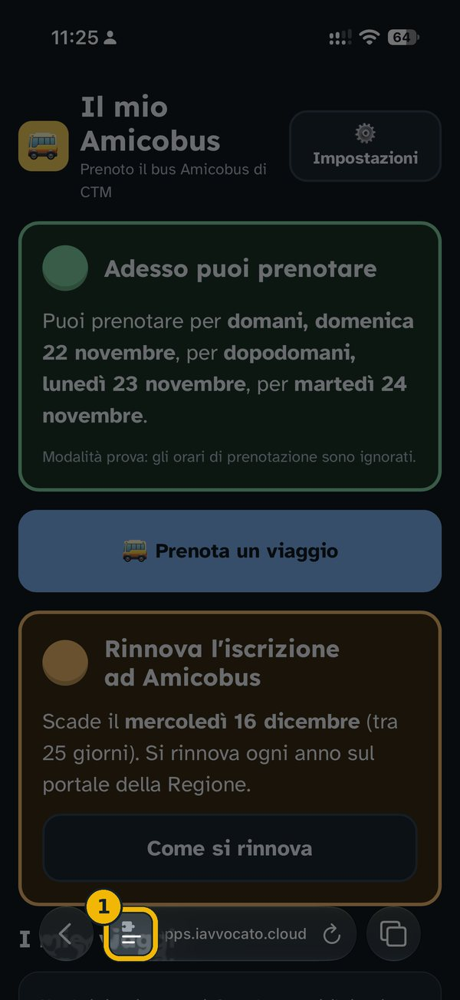
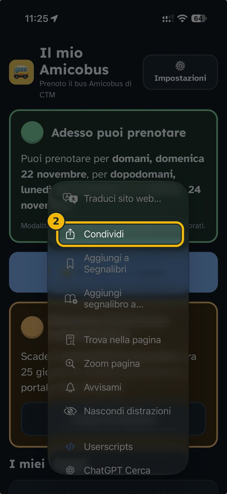
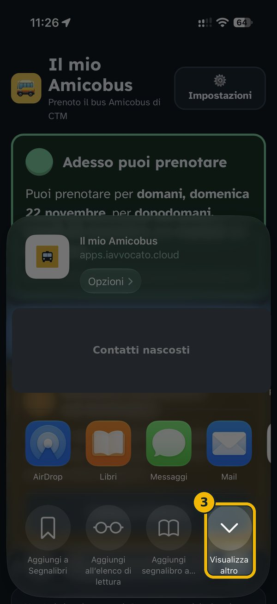
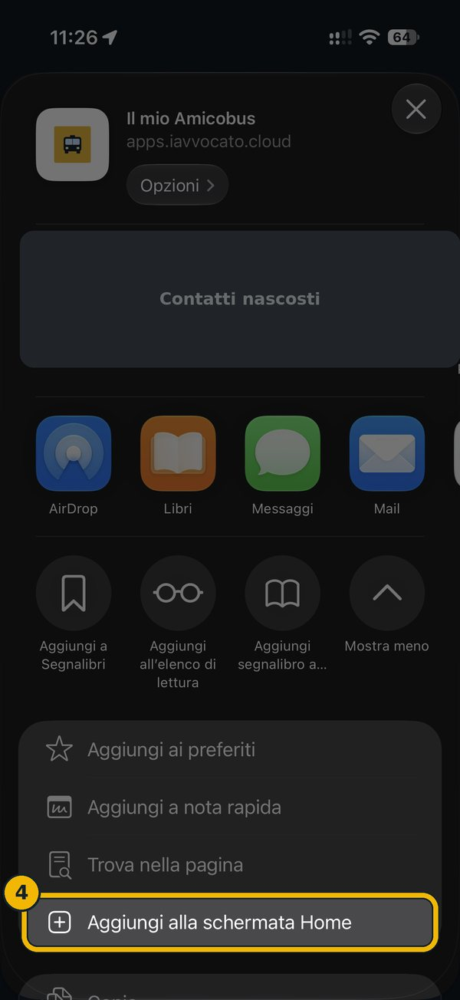

1
Aggiungi l'app alla schermata Home
Apri Safari e vai su apps.iavvocato.cloud/amicobus. Poi:
- Tocca il pulsante ≡ a sinistra dell'indirizzo, nella barra in basso.
- Nel menu tocca Condividi.
- Tocca Visualizza altro.
- Tocca Aggiungi alla schermata Home, poi Aggiungi.
Sulla Home compare l'icona gialla con il bus. Da lì l'app si apre a tutto schermo, come le altre.



